|
|


This page serves as a learning tool to assist in understanding a single perceptron unit and its applications, outside of multilayered nueral networks, with C++ and Python. Multilayered neural networks are the talk of the town. However, let's not get ahead of ourselves. Instead, let's start with a discussion of the units within the network, perceptrons. Once the perceptron is understood, a neural network can follow.
This page is not meant to be an exhaustive source of perceptron knowledge. It is meant to be breif and straight to the point. Additionally, this page may serve as a breif introductory comparison between C++ and Python.
Let's describe a perceptron by a function f. The mathematical model for a typical perceptron is a simple step function (1), where τ is called the threshold. The function can be rewritten so that the inequalities are set to zero (2). In this form, the threshold τ is often referred to as the bias b, where b = -τ. This is called a boolean function, because its output can only be either 1 or 0, which corresponds to true or false. A graph of the step function is shown to the right. It's no coincidence that it looks like a step.
|
|

To make things more compact, we can increase the size of both vectors to n + 1 and force the first component of the input vector to be -1 and the first component of the network vector to be the threshold τ, so that the first product in the sum is -τ, or the bias b (4).

Below is the code for a perceptron in Python (left) and C++ (right). Both of these examples use -1 as the first component of the input vector and τ as the first component of the network vector. The C++ code is more in depth and shows more clearly what is going on. In general, C++ syntax is bulkier than Python, but allows for more control over the program. A lot of what is explicitly defined in C++ is done "behind the scenes" in Python. Nonetheless, moving forward, it will be easy to see that the two languages share a lot in common.
Python |
C++ |
||||
|
|